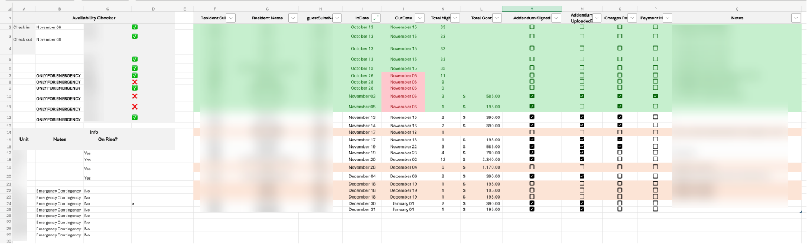
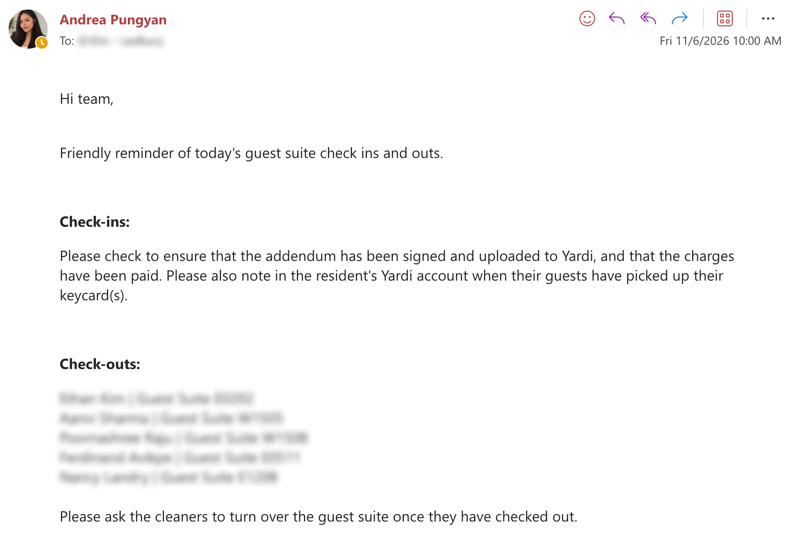
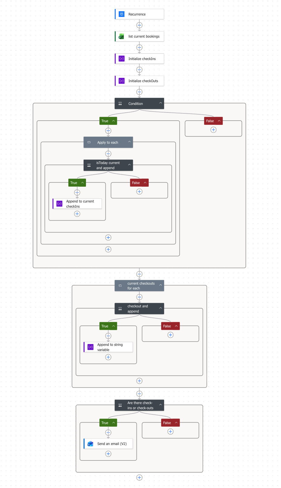

Guest Suite Automation
Turned a plain Excel sheet into a user-friendly guest suite tool, refined through team feedback, with clear visual cues and daily emails automated through Power Automate.
Overview
I started with a simple Excel sheet that had no formatting and redesigned it around the team’s day-to-day guest suite workflow. The company needed the tool to stay in Excel, so I focused on making availability and bookings easier to read within the existing spreadsheet. I also used Power Automate to automate daily check-in and check-out emails.
The problem
The original Excel sheet held the information the team needed, but its lack of formatting made it difficult to scan. The tool had to remain in Excel and be approachable for teammates who were less comfortable with spreadsheets. Daily check-in and check-out emails also involved repetitive manual coordination.
My contribution
I reorganized and formatted the spreadsheet into a clearer availability checker, with check-in and check-out dates, visible suite availability indicators, and emergency-only designations. I kept the tool in Excel and set up Power Automate to send daily check-in and check-out emails.
Dates turn red when they fall on today and yellow when they fall on tomorrow. Current bookings are highlighted green, while company stays are highlighted orange, making the different booking types and upcoming dates easier to spot.
I also added automatic calculations for the number of nights and total cost of each stay. This made the next step—preparing the addendum—easier, with the figures ready in the tracker rather than needing to be calculated separately or passed to someone else.
I finalized the layout and workflow through team feedback, keeping the number of moving parts small so teammates could use it without needing advanced Excel knowledge.
Screenshots



The Power Automate flow
The flow runs on a recurring schedule and reads the current bookings from Excel. It builds separate lists of today’s check-ins and check-outs, then checks whether either list has entries before sending the team an email.
This keeps the reminder tied to the booking tracker and avoids sending an email when there are no check-ins or check-outs to report.
Over the past six months, 98% of the flow’s runs have completed successfully.

Outcome
The result was a clearer, more approachable guest suite workflow that stayed in Excel as required. Team feedback shaped a straightforward tool with visible booking and date cues, while Power Automate handled the daily check-in and check-out emails to reduce repetitive coordination.
Double bookings caused by manually scanning dates no longer occur. With the number of nights and total cost calculated automatically, preparing the guest suite booking addendum—the document outlining the stay’s dates, charges, and terms—now takes about two minutes, down from five, a 60% reduction in preparation time.
The automation achieved a 98% successful run rate over the past six months.